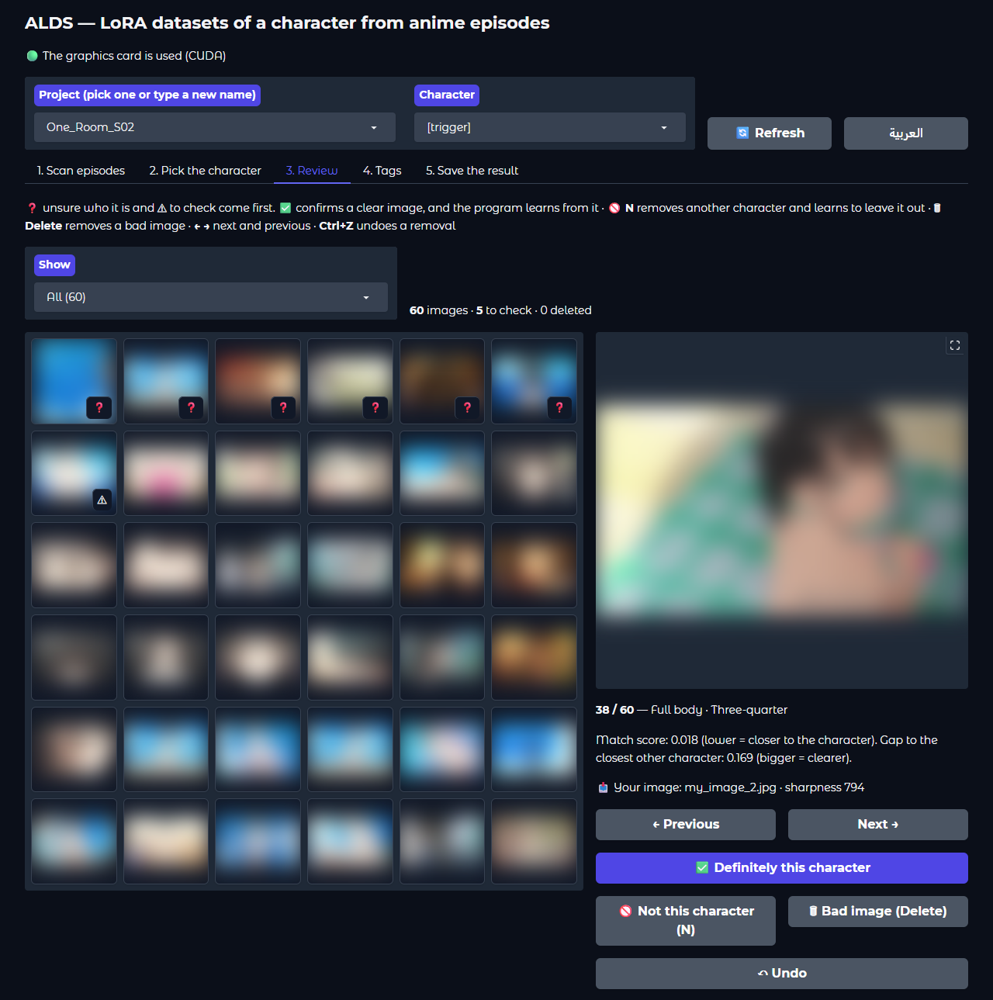
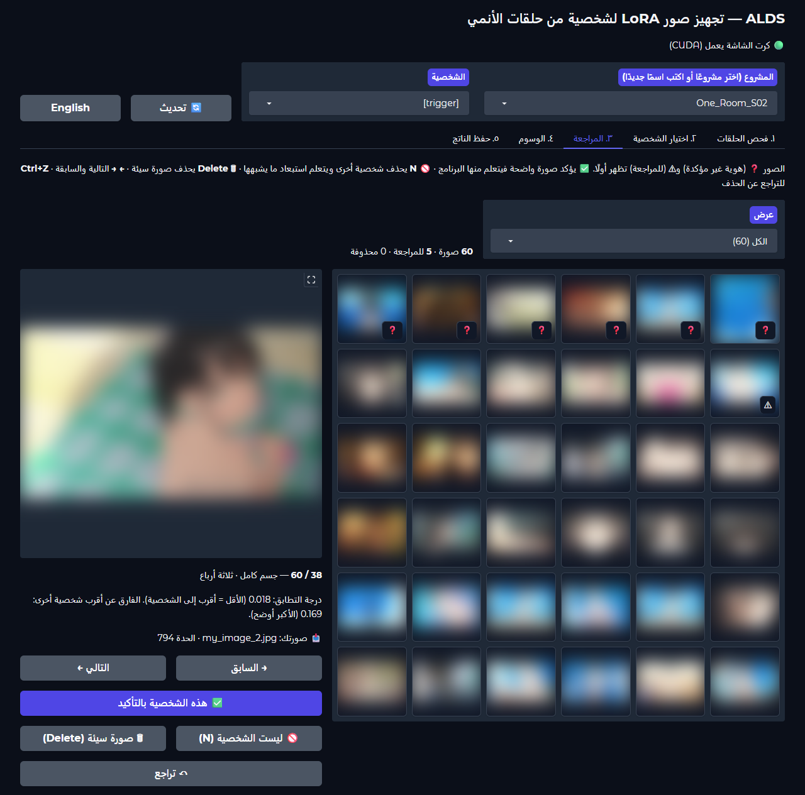
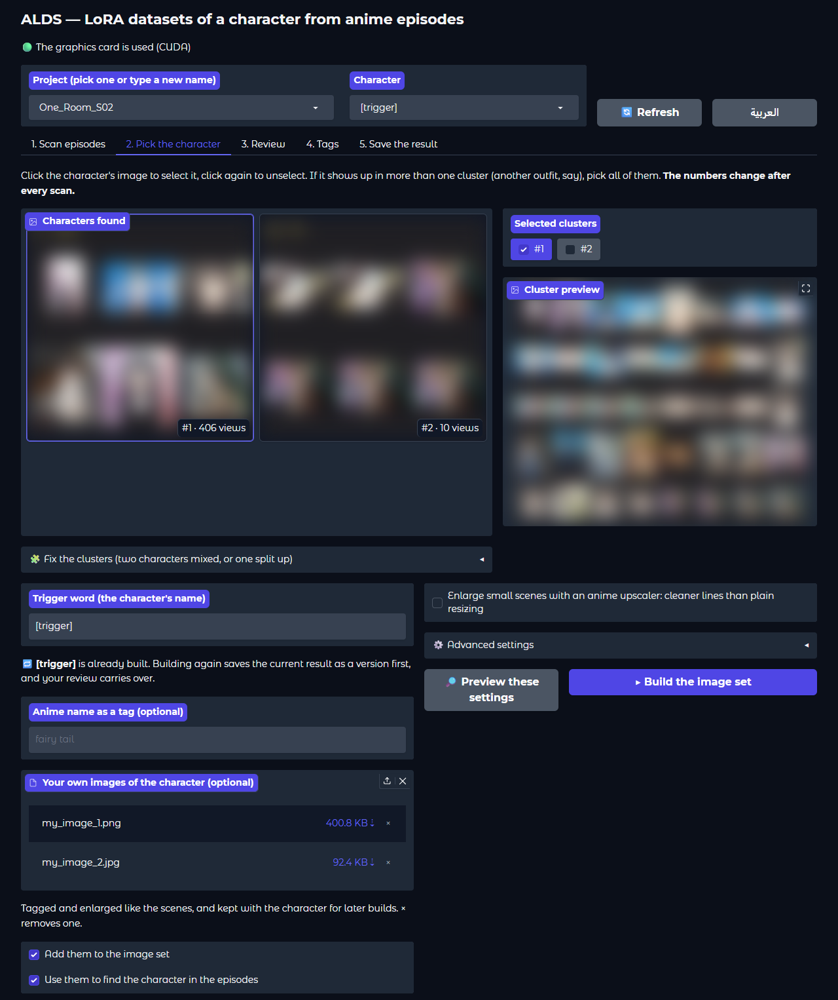
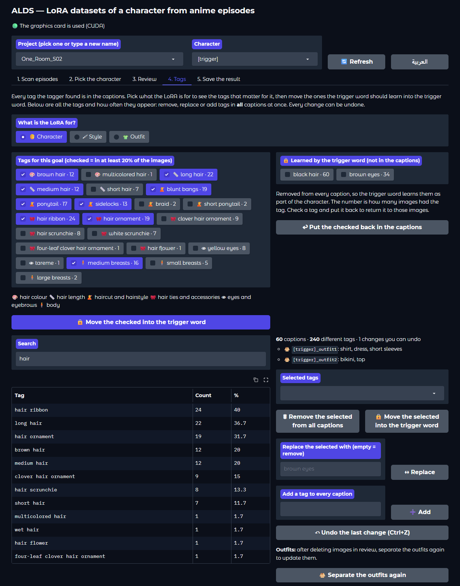
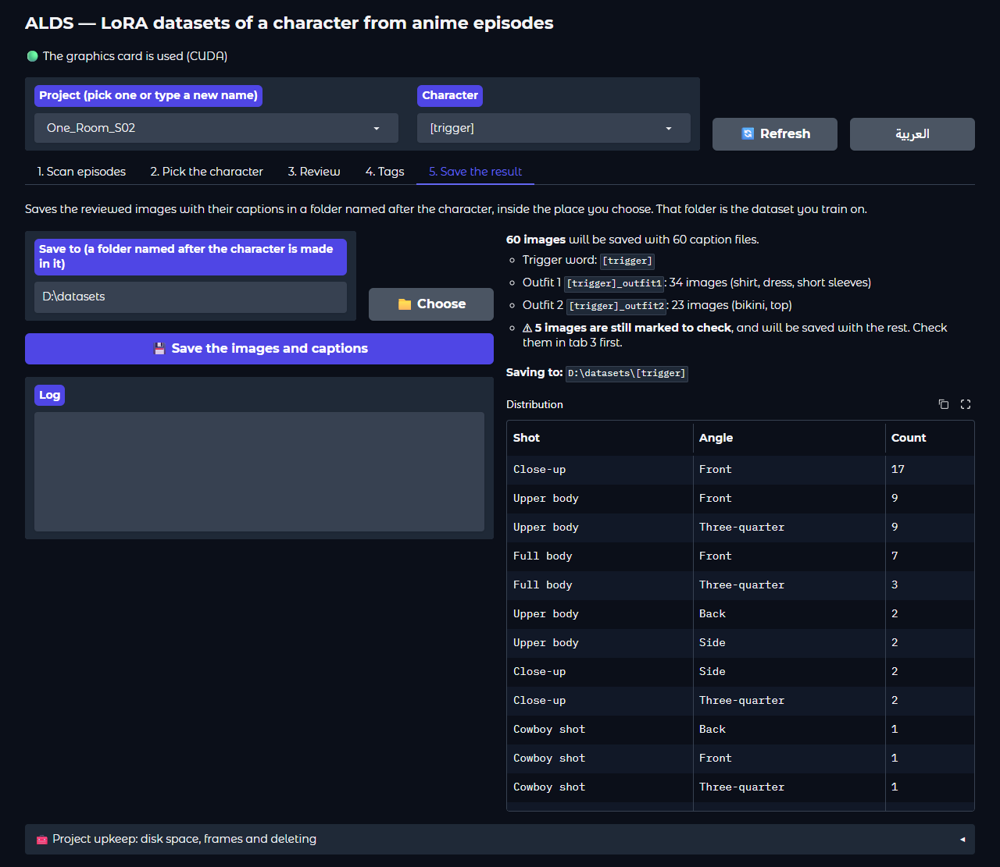

ALDS
Turn anime episodes into a clean, captioned LoRA dataset for one character. Made for training Anima LoRAs in AI Toolkit, with an Arabic and English interface.
حوّل حلقات الأنمي إلى مجموعة صور نظيفة وموصوفة لتدريب LoRA لشخصية واحدة. مُعدّ لتدريب LoRA لنموذج Anima في AI Toolkit، بواجهة عربية وإنجليزية.


Making a character LoRA from an anime usually means hours of taking screenshots, sorting them and writing captions. ALDS does it from the episode files: it finds every character in the episodes, lets you pick yours, and builds a sorted, captioned set of the scenes where your character is alone, which you review in a few minutes and train on.
تجهيز LoRA لشخصية من أنمي يعني عادة ساعات من التقاط الصور وترتيبها وكتابة أوصافها. ALDS يفعل ذلك من ملفات الحلقات مباشرة: يجد كل شخصية فيها، ويتيح لك اختيار شخصيتك، ثم يبني مجموعة مرتّبة وموصوفة من المشاهد التي تظهر فيها شخصيتك وحدها، تراجعها في دقائق وتدرّب عليها.
Features
المزايا
The slow parts of making a character dataset by hand, done automatically.
الأجزاء المملّة من تجهيز صور شخصية يدويًا، تتم تلقائيًا.
Finds your character
يجد شخصيتك
Every character in the episodes is detected and grouped by identity, so you pick yours with one click.
كل شخصية في الحلقات تُكتشف وتُجمَّع حسب هويتها، فتختار شخصيتك بنقرة واحدة.
Your own images too
وصورك الخاصة أيضًا
Add images of the character you already have: they're tagged and enlarged like the scenes, kept with the character, and help find it in the episodes, which is useful for side characters.
أضف صورًا للشخصية لديك من قبل: تُوسم وتُكبَّر مثل المشاهد، وتُحفظ مع الشخصية، وتساعد في إيجادها في الحلقات، وهذا مفيد للشخصيات الثانوية.
Skips the opening and ending
يتخطى الشارة
The OP/ED and long recaps are found by comparing the episodes with each other, and left out.
تُكتشف شارة البداية والنهاية والملخصات الطويلة بمقارنة الحلقات ببعضها، وتُستبعد.
Whole scenes, character alone
مشاهد كاملة والشخصية وحدها
Only the frames where your character is the only one on screen are used, uncut, and the character must fill at least half the frame height.
تُستخدم فقط الإطارات التي تظهر فيها شخصيتك وحدها، كاملة دون قص، على ألا تقل الشخصية عن نصف ارتفاع الإطار.
Filters out bad images
يستبعد الصور السيئة
On-screen text, dark or faded frames, black-and-white or sepia flashbacks, other characters in the way, chibi and blurry drawings, and near-duplicates.
النصوص على الشاشة، والإطارات المظلمة أو الباهتة، ومشاهد الذكريات بالأبيض والأسود أو البني، وتداخل شخصيات أخرى، والرسم المصغّر والضبابي، والصور المكررة تقريبًا.
Captions in Anima's style
أوصاف بأسلوب Anima
WD14 tags in Anima's order with your trigger word. Every tag is written; you choose which ones the trigger word learns.
وسوم WD14 بترتيب Anima مع كلمة التفعيل. تُكتب كل الوسوم، وأنت تختار ما تتعلمه كلمة التفعيل منها.
Sorted by shot and angle
مرتّبة حسب اللقطة والزاوية
From close-up to full body, and front, three-quarter, side, back, from above and from below.
من اللقطة القريبة إلى الجسم الكامل، ومن الأمام وثلاثة أرباع والجانب والخلف والأعلى والأسفل.
Separates outfits
يفصل الأزياء
When the character wears more than one outfit, each outfit gets its own tag.
إن ظهرت الشخصية بأكثر من زي، يأخذ كل زي وسمًا خاصًا به.
Learns from your review
يتعلم من مراجعتك
Confirm clear examples as identity references or reject another character. Review ambiguous matches first, preview the effect before rebuilding, and remove a mistaken confirmation at any time.
أكّد الصور الواضحة كمراجع للهوية أو ارفض شخصية أخرى. راجع المطابقات الملتبسة أولًا، وعاين الأثر قبل إعادة البناء، وألغِ أي تأكيد خاطئ لاحقًا.
Anime upscaler
تكبير بنموذج للأنمي
Optionally, scenes smaller than your training size are enlarged with an anime model you choose: waifu2x, Real-ESRGAN animevideov3, AnimeSharp, APISR or CDC. A model is downloaded only when you choose it, and can be deleted to free the space.
اختياريًا، تُكبَّر المشاهد الأصغر من دقة التدريب بموديل أنمي تختاره: waifu2x أو Real-ESRGAN animevideov3 أو AnimeSharp أو APISR أو CDC. يُحمَّل الموديل فقط عند اختياره، ويمكن حذفه لتوفير المساحة.
Fast rebuilds
إعادة بناء سريعة
The analysis is saved, so trying other thresholds or options takes seconds instead of minutes.
يُحفظ التحليل، فتجربة حدود أو خيارات أخرى تستغرق ثواني بدل دقائق.
Safe to stop
إيقاف آمن
Every long action can be stopped, and whatever it made is removed.
يمكن إيقاف أي عملية طويلة، ويُحذف كل ما ولّدته.
Ready for AI Toolkit
جاهز لـ AI Toolkit
From the command line, export can balance the angles and write a job config with the step schedule worked out for your image count.
من سطر الأوامر يوازن التصدير بين الزوايا، ويكتب ملف إعداد للتدريب بعدد خطوات محسوب حسب عدد صورك.
Screenshots
صور من البرنامج
Pictures taken from the episodes are blurred here; in the program they show as they are.
الصور المأخوذة من الحلقات ضبابية هنا، وتظهر في البرنامج كما هي.








Requirements
المتطلبات
- Windows 10 or 11 and Python 3.12.
- An NVIDIA graphics card with CUDA is strongly recommended. The program runs on the processor alone, but slowly. A scan uses up to about 8 GB of graphics memory.
- Free disk space: the extracted frames take a few hundred megabytes per episode until you clean them up.
- AI Toolkit to train the LoRA afterwards.
- ويندوز 10 أو 11 و Python 3.12.
- يُنصح بشدة بكرت شاشة NVIDIA يدعم CUDA. البرنامج يعمل على المعالج وحده لكن ببطء. والفحص يستخدم حتى نحو 8 غيغابايت من ذاكرة كرت الشاشة.
- مساحة على القرص: الإطارات المستخرجة تأخذ بضع مئات من الميغابايت لكل حلقة حتى تنظّفها.
- AI Toolkit لتدريب LoRA بعد ذلك.
Install
التثبيت
-
Download the ZIP of the latest release and extract it, or clone the repository:
حمّل ملف ZIP من آخر إصدار وفك ضغطه، أو انسخ المستودع:
git clone https://github.com/DVNM3/ALDS.git -
In the program folder, create the Python environment and install the requirements:
داخل مجلد البرنامج، أنشئ بيئة Python وثبّت المتطلبات:
py -3.12 -m venv .venv .venv\Scripts\python.exe -m pip install -r requirements.txt -
Double-click
alds-gui.bat. The models download from Hugging Face by themselves on the first run. افتحalds-gui.batبنقرة مزدوجة. تُحمَّل النماذج من Hugging Face تلقائيًا في أول تشغيل.
Updating: run git pull in the program folder, or replace the alds folder with the one from the new ZIP. Your projects folder, settings.json and .venv stay as they are. If requirements.txt changed, run the pip install line again.
التحديث: نفّذ git pull في مجلد البرنامج، أو استبدل مجلد alds بالجديد من ملف ZIP. مجلد projects و settings.json و .venv تبقى كما هي. وإن تغيّر requirements.txt فأعد تنفيذ سطر pip install.
Using the interface
استخدام الواجهة
Double-click alds-gui.bat. The interface opens in your browser at http://127.0.0.1:7860 and only runs on your computer; close the black command window to stop it. The العربية / English button switches the language in place, without losing anything you did. The tabs follow the work from left to right:
افتح alds-gui.bat بنقرة مزدوجة. تفتح الواجهة في المتصفح على http://127.0.0.1:7860 وتعمل على جهازك فقط، ولإيقافها أغلق نافذة الأوامر السوداء. زر العربية / English يبدّل اللغة في الصفحة نفسها دون أن يضيع شيء مما فعلته. والتبويبات تتبع العمل بالترتيب:
Scan episodes
فحص الحلقات
Drop the episode files on the box, or choose them or a whole folder with the buttons, and start scanning. The OP/ED is found automatically, and tab 2 opens when the scan ends.
اسحب ملفات الحلقات وأفلتها في المربع، أو اخترها أو اختر مجلدًا كاملًا بالأزرار، وابدأ الفحص. تُكتشف الشارة تلقائيًا، ويفتح التبويب الثاني عند انتهاء الفحص.
Pick the character
اختيار الشخصية
Click your character's card, type the trigger word, add your own images if you have some, and build. Building an existing character again keeps the previous result as a version. A card that mixes two characters can be split.
اضغط على بطاقة شخصيتك، واكتب كلمة التفعيل، وأضف صورك الخاصة إن وُجدت، وابنِ الصور. وإعادة بناء شخصية موجودة تحفظ النتيجة السابقة كنسخة. والبطاقة التي تخلط شخصيتين يمكن تقسيمها.
Review
المراجعة
Opens after a build, with the doubtful images first. Remove what isn't right, fix a caption, move an image to another group, or show one outfit only.
تفتح بعد البناء، والصور المشكوك فيها أولًا. أزل ما ليس صحيحًا، وعدّل وصفًا، وانقل صورة إلى مجموعة أخرى، أو اعرض زيًا واحدًا فقط.
Tags
الوسوم
Pick what the LoRA is for: character, style or outfit. The tags that matter for it are listed by kind (hair colour, haircut, hair ties, tattoos, earrings, clothes...). Move the ones the trigger word should learn into it, and put any back later. Below, every tag and how often it appears, with remove, replace, add and undo.
اختر غرض اللورا: شخصية أو أسلوب رسم أو زي. تظهر الوسوم المهمة له مجمّعة حسب النوع (لون الشعر، قصته، ربطات الشعر، الوشم، الأقراط، الملابس...). انقل ما تريد أن تتعلمه كلمة التفعيل إليها، وأعد أيًّا منها متى شئت. وفي الأسفل كل الوسوم وعدد ظهورها، مع الحذف والاستبدال والإضافة والتراجع.
Save the result
حفظ الناتج
Choose a place; a folder named after the character is made there with the images and captions: your dataset. “Project upkeep” shows the project's size, cleans it up and deletes it.
اختر مكانًا، فيُنشأ فيه مجلد باسم الشخصية فيه الصور وأوصافها: هذا ملف التدريب. و«صيانة المشروع» تعرض حجمه وتنظّفه وتحذفه.
Review keys
مفاتيح المراجعة
| Key | Action |
|---|---|
| N | Not this character: an image of another character. The program learns from it and leaves out what looks like it from now on. |
| Delete | Bad image of the character itself. It's only removed. |
| ← → | Previous and next image. |
| Ctrl+Z | Undo the last removal. |
| المفتاح | العمل |
|---|---|
| N | ليست الشخصية: صورة لشخصية أخرى. يتعلّم منها البرنامج ويستبعد ما يشبهها من الآن فصاعدًا. |
| Delete | صورة سيئة للشخصية نفسها، تُزال فقط. |
| → ← | الصورة السابقة والتالية. |
| Ctrl+Z | التراجع عن آخر إزالة. |
Good to know
من المفيد أن تعرف
- Progress: every long action shows a progress bar under its button and writes each step to its log box as it goes, in the interface language.
- Stop button: every long action shows one while it runs. The action stops within seconds and the project is back exactly as it was. The same happens when an action fails, and with Ctrl+C on the command line.
- Removed images aren't deleted for good: they move to a
_deletedfolder inside the character folder. - The language you used last opens on the next start.
- التقدّم: تعرض كل عملية طويلة شريط تقدّم تحت زرها، وتكتب كل خطوة في سجلها أولًا بأول، بلغة الواجهة.
- زر الإيقاف: يظهر لكل عملية طويلة أثناء تشغيلها. تتوقف العملية خلال ثوانٍ ويعود المشروع كما كان تمامًا. ويحدث الشيء نفسه إن فشلت العملية، ومع Ctrl+C في سطر الأوامر.
- الصور المُزالة لا تُحذف نهائيًا: تنتقل إلى مجلد
_deletedداخل مجلد الشخصية. - آخر لغة استخدمتها تفتح في التشغيل التالي.
Where your files go
أين تُحفظ ملفاتك
Everything the program makes stays in the projects folder next to it, one folder per project.
كل ما يصنعه البرنامج يبقى في مجلد projects بجانبه، مجلد لكل مشروع.
“Save the result” (or export on the command line) copies the reviewed images and captions into one flat folder: the dataset you point AI Toolkit at, with caption extension txt.
و«حفظ الناتج» (أو export في سطر الأوامر) ينسخ الصور بعد المراجعة مع أوصافها إلى مجلد واحد: مجموعة البيانات التي توجّه إليها AI Toolkit، بامتداد وصف txt.
projects\<project>\
frames\ extracted frames (free them with "clean")
clusters\ the character cards
cache\ saved analysis for fast rebuilds
characters\<name>\
sorted\close_up\front\ image .png + caption .txt
sorted\_review\ doubtful images, check first
report.txt statistics and anglesprojects\<project>\
frames\ الإطارات المستخرجة (تُحرَّر بـ clean)
clusters\ بطاقات الشخصيات
cache\ التحليل المحفوظ لإعادة بناء سريعة
characters\<name>\
sorted\close_up\front\ صورة PNG + وصف TXT
sorted\_review\ صور مشكوك فيها، راجعها أولًا
report.txt إحصائيات وتوزيع الزواياHow a build works
كيف يعمل البناء
What happens between picking the character and reviewing its images.
ما يحدث بين اختيار الشخصية ومراجعة صورها.
| Stage | How |
|---|---|
| Recognising the character | CCIP compares every detected character with the references; the default threshold is 0.13. |
| Scenes | The whole frame, never cut. Only frames where your character is alone: no other person detected, and the tagger counts one person. The character must be at least half the frame height. |
| Other characters | The clusters you didn't pick show what other characters look like; frames closer to one of them than to yours are left out. |
| Leaving out | Text on screen (read with OCR), dark or faded frames, black-and-white or sepia flashbacks, chibi and blurry drawings. |
| Removing duplicates | Visual similarity (WD14 embedding) ≥ 0.80; the sharpest image is kept. |
| Tags | WD14 EVA02-Large, in Anima's style: lowercase, spaces instead of _. |
| Caption order | anime screencap, safe, 1boy, <trigger>, <series>, <tags...> |
| Fixed features | Every tag is written. In the Tags tab you move the ones the trigger word should learn (hair, eyes, tattoos...) out of the captions. |
| Small details | Tattoos, hair ties and earrings are easy to miss. When one is clearly found in several images of the character, it is also accepted where the tagger was less sure (score 0.2 or more). |
| Angle | Tags give side, back, from above and from below; where the eyes sit inside the face separates three-quarter from front. |
| Outfits | Images grouped by their clothing tags and how they look, with a tag per outfit when there is more than one. |
| Upscaling (optional) | Every scene smaller than 1024 pixels is enlarged with the model you choose, at most 4×, in small tiles that need little graphics memory. |
| المرحلة | الطريقة |
|---|---|
| التعرف على الشخصية | يقارن CCIP كل شخصية مكتشفة بالمراجع، والحد الافتراضي 0.13. |
| المشاهد | الإطار كاملًا دون قص. فقط الإطارات التي تظهر فيها شخصيتك وحدها: لا يُكتشف شخص آخر، ويَعدّ موديل الوسوم شخصًا واحدًا. ويجب ألا تقل الشخصية عن نصف ارتفاع الإطار. |
| الشخصيات الأخرى | المجموعات التي لم تخترها تبيّن شكل الشخصيات الأخرى، فيُستبعد كل إطار أقرب إلى إحداها منه إلى شخصيتك. |
| الاستبعاد | النصوص على الشاشة (تُقرأ بـ OCR)، والإطارات المظلمة أو الباهتة، ومشاهد الذكريات بالأبيض والأسود أو البني، والرسم المصغّر والضبابي. |
| إزالة التكرار | التشابه البصري (تضمين WD14) ≥ 0.80، ويُبقى الأوضح. |
| الوسوم | WD14 EVA02-Large بأسلوب Anima: أحرف صغيرة ومسافات بدل _. |
| ترتيب الوصف | anime screencap, safe, 1boy, <trigger>, <series>, <tags...> |
| الصفات الثابتة | تُكتب كل الوسوم. وفي تبويب الوسوم تنقل ما تريد أن تتعلمه كلمة التفعيل (الشعر، العينان، الوشم...) خارج الأوصاف. |
| التفاصيل الصغيرة | الوشم وربطات الشعر والأقراط يسهل أن تفوت موديل الوسوم. إذا ظهر أحدها بوضوح في عدة صور للشخصية، يُقبل أيضًا حيث كان موديل الوسوم أقل ثقة (درجة 0.2 فأكثر). |
| الزاوية | الوسوم تحدد الجانب والخلف والأعلى والأسفل، وموضع العينين في الوجه يفرّق بين ثلاثة أرباع والأمام. |
| الأزياء | تُجمَّع الصور حسب وسوم الملابس وشكلها، ولكل زي وسم إن كان هناك أكثر من زي. |
| التكبير (اختياري) | كل مشهد أصغر من 1024 بكسل يُكبَّر بالموديل الذي تختاره، بحد أقصى 4×، على أجزاء صغيرة لا تحتاج ذاكرة كبيرة من كرت الشاشة. |
Command line
سطر الأوامر
Everything in the interface is also available as commands, plus balancing and AI Toolkit job configs on export. alds.bat <command> --help lists every option, and the README explains each command.
كل ما في الواجهة متاح أيضًا كأوامر، ومعها موازنة الزوايا وملف إعداد AI Toolkit عند التصدير. alds.bat <command> --help يعرض كل خيارات الأمر، وملف README يشرح كل أمر.
| Command | What it does |
|---|---|
scan | Extract frames, find the characters and group them into numbered clusters. |
autoskip | Find the OP/ED again, or turn it off. |
clusters split | Re-cluster the project, or split one mixed cluster. |
build | Make the character's sorted, captioned images. |
reject | Mark images as another character. |
tags outfits | Edit tags in bulk; separate the outfits again. |
export | Copy the reviewed images into one dataset folder, optionally balanced, with an AI Toolkit config. |
clean | Free disk space. |
gui | Open the interface. |
| الأمر | ما يفعله |
|---|---|
scan | يستخرج الإطارات ويجد الشخصيات ويجمّعها في مجموعات مرقّمة. |
autoskip | يعيد اكتشاف الشارة، أو يوقفها. |
clusters split | يعيد تجميع المشروع، أو يقسم مجموعة مختلطة. |
build | يصنع صور الشخصية مرتّبة وموصوفة. |
reject | يعلّم صورًا كشخصية أخرى. |
tags outfits | يعدّل الوسوم دفعة واحدة، ويعيد فصل الأزياء. |
export | ينسخ الصور بعد المراجعة إلى مجلد واحد، مع موازنة اختيارية وملف إعداد لـ AI Toolkit. |
clean | يوفّر مساحة القرص. |
gui | يفتح الواجهة. |
A typical run:
مثال على تشغيل كامل:
alds.bat scan -p myshow "D:\anime\Season 1"
alds.bat build -p myshow -n my_char --cluster 2
alds.bat export -p myshow -n my_char --total 100After scan, open projects\myshow\clusters\overview.jpg to find your character's cluster number. Cluster numbers change after every scan.
بعد scan افتح projects\myshow\clusters\overview.jpg لتعرف رقم مجموعة شخصيتك. أرقام المجموعات تتغير بعد كل فحص.
Tuning
ضبط الإعدادات
report.txtlists the build steps and says how many frames are just above the match threshold. If other characters slip in, lower--threshold(e.g. 0.11); if there are too few images, raise it (e.g. 0.15).--sim 0.85keeps more similar images;0.75removes duplicates more strictly.--min-height 0.6leaves out scenes where the character is smaller than 60% of the frame height (default 0.5).--upscale --upscaler waifu2xupscales smaller scenes to your training resolution (--upscale-to, default 1024).--save-droppedkeeps the left-out images, to check the filters.--overwritesaves a version before rebuilding and carries matching review decisions forward. Useversionsto compare or restore results.--previewchecks the build settings on 12 sampled frames, with reasons for accepted and excluded scenes.restore-framesrecovers missing frames from the original episodes after cleaning.
- يعرض
report.txtخطوات البناء وعدد الإطارات التي تقع فوق حد التطابق بقليل. إن دخلت شخصيات أخرى فاخفض--threshold(مثل 0.11)، وإن قلّت الصور فارفعه (مثل 0.15). --sim 0.85يُبقي صورًا متشابهة أكثر، و0.75يحذف التكرار بصرامة أكبر.--min-height 0.6يستبعد المشاهد التي تقل فيها الشخصية عن 60% من ارتفاع الإطار (الافتراضي 0.5).--upscale --upscaler waifu2xيكبّر المشاهد الأصغر إلى دقة التدريب (--upscale-to، الافتراضي 1024).--save-droppedيحفظ الصور المستبعدة لتتحقق من الفلاتر.--overwriteيحفظ نسخة قبل إعادة البناء وينقل مراجعات الصور المطابقة. استخدمversionsللمقارنة أو استعادة النتائج.--previewيعاين إعدادات البناء على ١٢ إطارًا، مع أسباب قبول المشاهد واستبعادها.restore-framesيستعيد الإطارات المفقودة من الحلقات الأصلية بعد التنظيف.
Built with
مبني على
- imgutils by deepghs: character detection, CCIP identity features, OCR, the CDC upscaler and the WD14 tagger interface.
- WD14 taggers by SmilingWolf for the tags.
- Upscaling models: waifu2x, Real-ESRGAN animevideov3, AnimeSharp and APISR, downloaded on first use under their own licences.
- Gradio for the interface, PyAV for decoding and scikit-learn for clustering.
- imgutils من deepghs: كشف الشخصيات، وبصمة الهوية CCIP، وقراءة النصوص، ونموذج التكبير CDC، وواجهة موسِّم WD14.
- موسِّمات WD14 من SmilingWolf للوسوم.
- موديلات التكبير: waifu2x وReal-ESRGAN animevideov3 وAnimeSharp وAPISR، تُحمَّل عند أول استخدام وفق تراخيصها.
- Gradio للواجهة، وPyAV لفك ترميز الفيديو، وscikit-learn للتجميع.